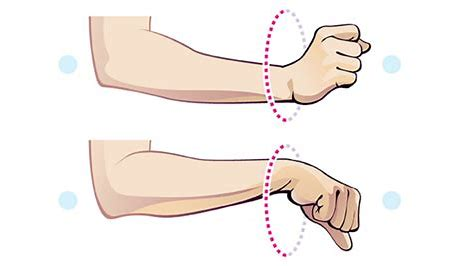
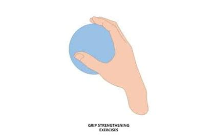
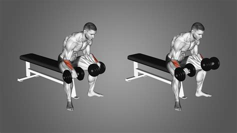
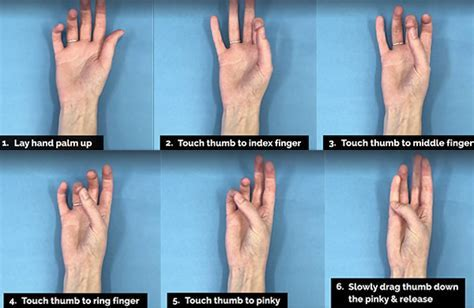

Wrist Rehab Guide
Rehab Tips
| # | Tip | Description |
|---|---|---|
| 1 | Avoid Overuse | Take breaks from repetitive motions to prevent strain. |
| 2 | Use Proper Ergonomics | Maintain neutral wrist position while typing or lifting. |
| 3 | Apply Ice & Heat | Use ice for swelling and heat for stiffness relief. |
| 4 | Strengthen & Stretch | Perform wrist exercises to improve mobility and strength. |
Rehab Exercises
| # | Exercise | Description | Image |
|---|---|---|---|
| 1 | Wrist Flexor Stretch | Extend arm, pull fingers back gently for a deep stretch. |  |
| 2 | Wrist Extensor Stretch | Extend arm, pull fingers downward for a stretch. |  |
| 3 | Wrist Rotations | Make slow circles with your wrist in both directions. |  |
| 4 | Grip Strengthening | Squeeze a stress ball and release slowly. |  |
| 5 | Wrist Curls | Hold a light weight, curl wrist up and down. |  |
| 6 | Finger Taps | Tap each fingertip to thumb, improving dexterity. |  |